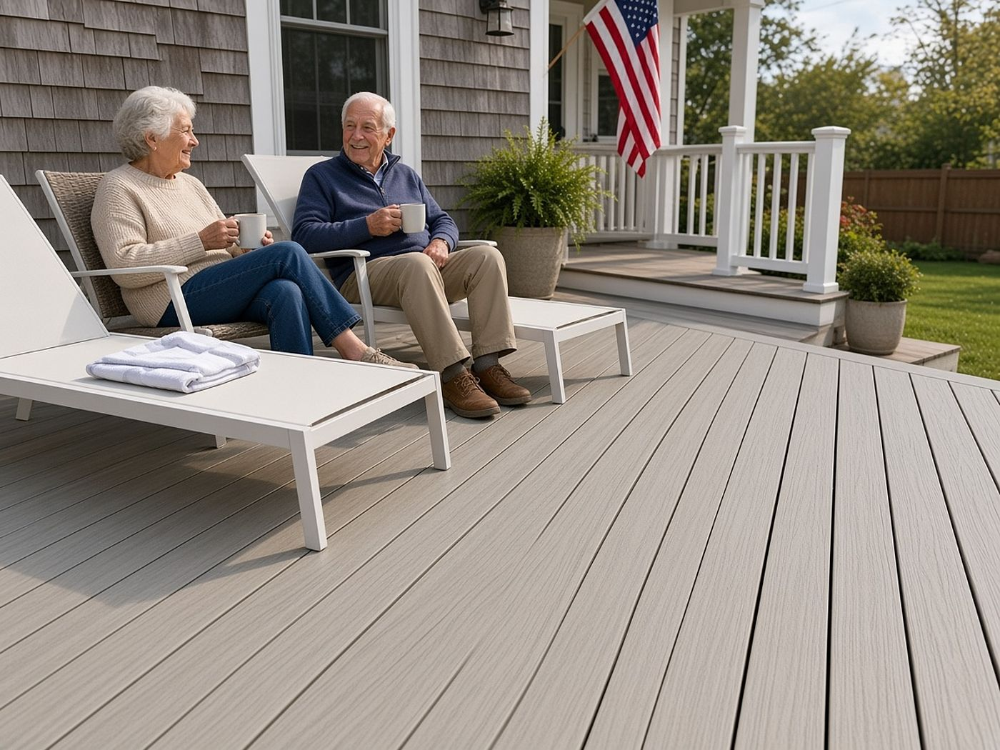
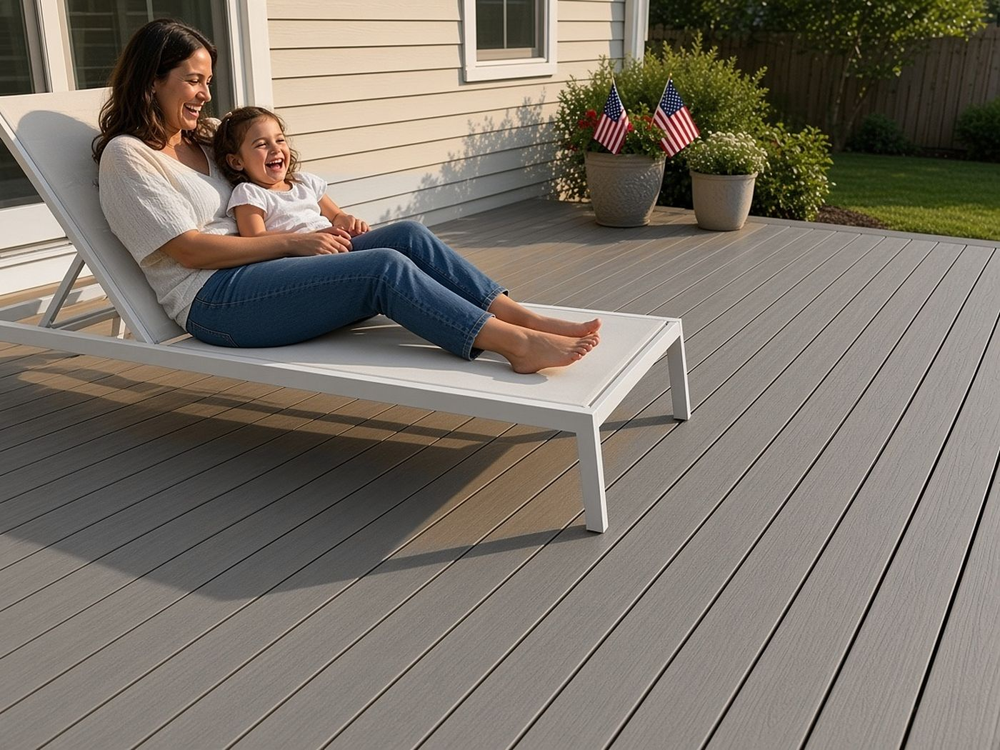
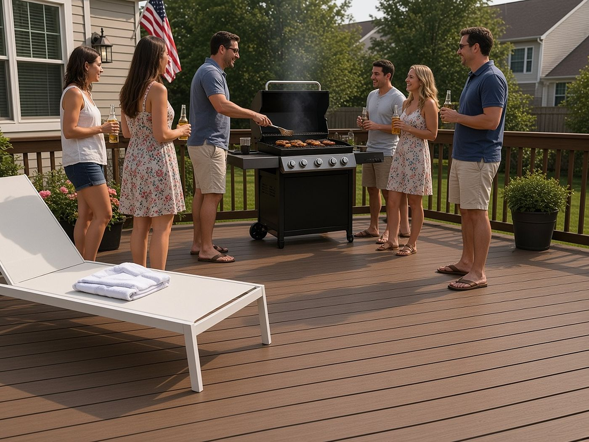
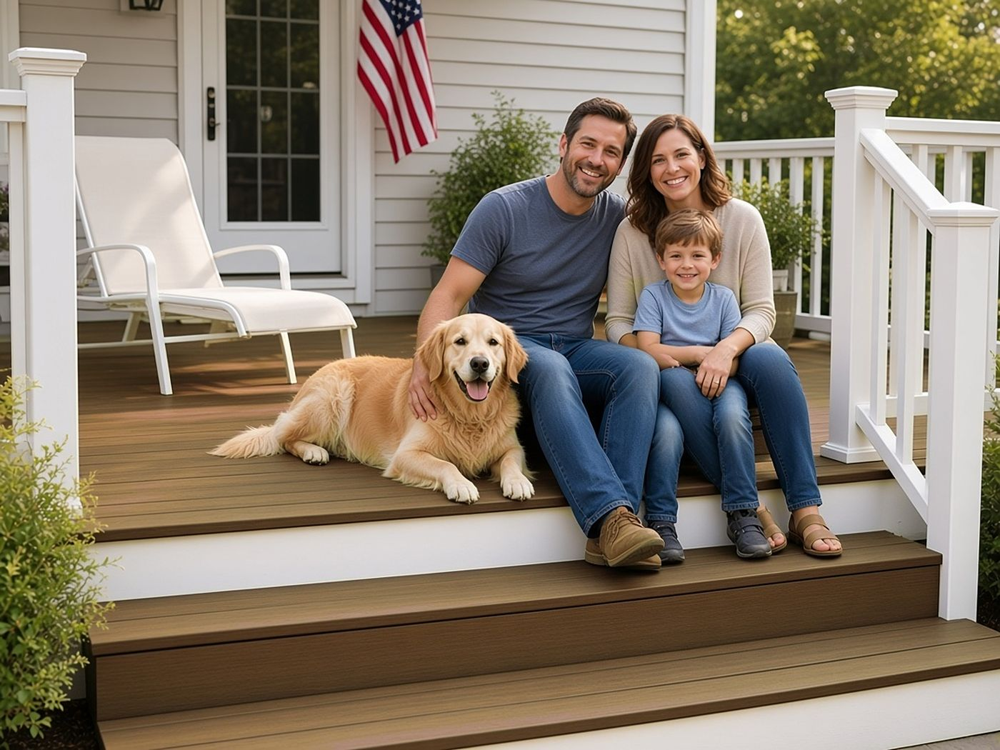
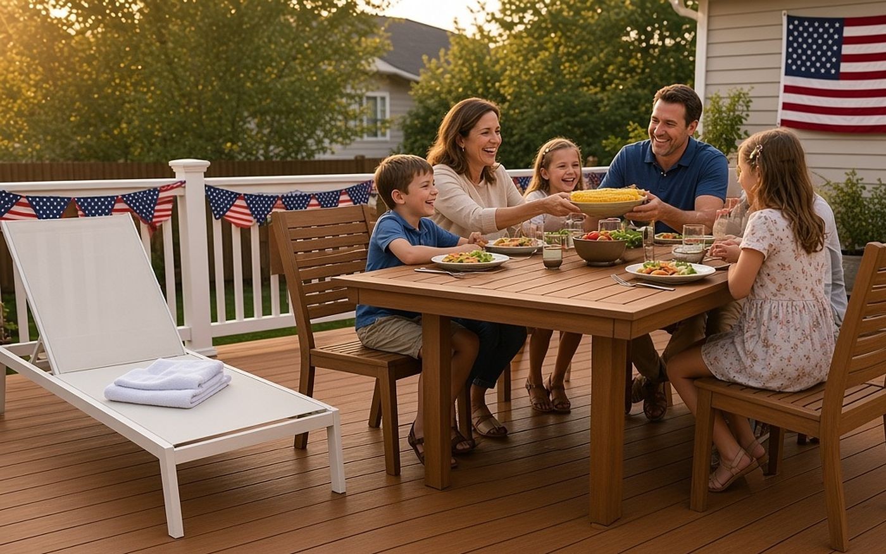

Picking a deck color can feel bigger than it should. You're choosing the floor of your favorite outdoor room, the place where you'll have coffee, watch the kids, and stay out long after dinner. The good news is that you don't have to guess. TrueGrain Deck comes in six hardwood inspired colors, and there are a few easy ways to find the one that looks right on your house and feels right under your feet.
Start With the Feeling You Want
Before you look at swatches, picture yourself out there on a good evening. Is it breezy and relaxed, like a beach house? Warm and cozy, like a cabin? Rich and formal, like a fine old porch? Each TrueGrain color leans toward a different mood, and starting with the feeling makes the choice much simpler.
The Cool, Easygoing Greys
New England Birch is a weathered silver grey. It has that sun washed, seaside look people love on coastal homes, and it pairs nicely with white trim and blue or grey siding.

Coastal Driftwood is a soft, warm grey. You still get a calm, relaxed look, but with a little more warmth, so it suits homes with beige, cream, or warm stone accents.

If you want your deck to feel open, airy, and peaceful, start with these two.
The Warm, Welcoming Middle Tones
Aged Oak is a golden tan with an open grain. It feels friendly and natural, the kind of deck that makes you want to kick off your shoes. One of our favorite projects, a lakeside deck in Aged Oak, shows how well it sits next to water and trees.
Embered Taupe is a warm, smoky brown. It sits right between the greys and the darker woods, which makes it a great choice when you want warmth without going dark. It works with almost any siding color.

The Rich, Classic Dark Woods
Royal IPE is a deep mahogany amber. It has the look people go after when they want an exotic hardwood deck, with none of the oiling and sanding that real hardwood asks for.

Tropical Walnut is a dark walnut grain. It feels elegant and grounded, and it looks especially sharp against light siding and white railings.

If your style is more traditional or upscale, these two give your outdoor space a finished, high end feel.
Look at Your House, Not Just the Board
A color that looks great in a photo can feel different next to your siding, roof, and trim. A few tips help:
- Match the undertone. Cool homes (grey, white, blue) usually look best with cool or neutral decking. Warm homes (tan, brick, cream, wood shingle) usually look best with warmer tones.
- Think about contrast. A light deck next to a dark house, or a dark deck next to a light house, gives a crisp, polished look. Tones that are close together feel softer and blend in.
- Consider your yard. Lots of greenery makes warm browns glow. Sand, stone, and water often look lovely next to the greys.
See It in Your Own Light
This is the most important step. The color on your screen isn't the color on your deck. That's why we ship real 6 inch samples of TrueGrain Deck for free. Set them on your existing deck or patio, look at them in the morning and again in the late afternoon, and hold them up against your siding. You'll read the real grain and see how each color shifts as the sun moves. Most people know which one is theirs within a day.
You can also try our 3D Deck Designer. Build your deck in 3D, switch between all six TrueGrain colors in real time, and spin around it from every angle. It's a fun way to narrow six choices down to two before the samples show up.
The Color Stays the Color You Chose
Whichever color you pick, you want it to look the same years from now. Every TrueGrain board has a weatherable ASA cap that seals all four sides against fade, stain, and moisture. On top of that, the decorative surface carries a 25 year limited residential warranty against abnormal color change and cracking. So the deck you fall in love with this year is the deck you'll still be enjoying down the road, with no staining, sanding, or sealing.
And every board is Made in America, extruded and finished by Patwin Plastics in Linden, New Jersey.
Find Your Color
Ready to see them in person? Order your free TrueGrain Deck samples, play with colors in the 3D Deck Designer on americanprobp.com, or talk to a real person on our sales team at 1-877-442-6776 or sales@americanprobp.com. We'll help you find the deck that feels like home.